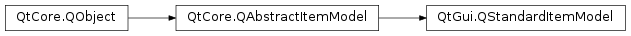

QStandardItemModel¶
Synopsis¶
Functions¶
- def
appendColumn(items) - def
appendRow(item) - def
appendRow(items) - def
clear() - def
findItems(text[, flags=Qt.MatchExactly[, column=0]]) - def
horizontalHeaderItem(column) - def
indexFromItem(item) - def
insertColumn(column, items) - def
insertRow(row, item) - def
insertRow(row, items) - def
invisibleRootItem() - def
item(row[, column=0]) - def
itemFromIndex(index) - def
itemPrototype() - def
setColumnCount(columns) - def
setHorizontalHeaderItem(column, item) - def
setHorizontalHeaderLabels(labels) - def
setItem(row, column, item) - def
setItem(row, item) - def
setItemPrototype(item) - def
setItemRoleNames(roleNames) - def
setRowCount(rows) - def
setSortRole(role) - def
setVerticalHeaderItem(row, item) - def
setVerticalHeaderLabels(labels) - def
sortRole() - def
takeColumn(column) - def
takeHorizontalHeaderItem(column) - def
takeItem(row[, column=0]) - def
takeRow(row) - def
takeVerticalHeaderItem(row) - def
verticalHeaderItem(row)
Signals¶
- def
itemChanged(item)
Detailed Description¶
The
PySide2.QtGui.QStandardItemModelclass provides a generic model for storing custom data.
PySide2.QtGui.QStandardItemModelcan be used as a repository for standard Qt data types. It is one of the Model/View Classes and is part of Qt’s model/view framework.
PySide2.QtGui.QStandardItemModelprovides a classic item-based approach to working with the model. The items in aPySide2.QtGui.QStandardItemModelare provided byPySide2.QtGui.QStandardItem.
PySide2.QtGui.QStandardItemModelimplements thePySide2.QtCore.QAbstractItemModelinterface, which means that the model can be used to provide data in any view that supports that interface (such asPySide2.QtWidgets.QListView,PySide2.QtWidgets.QTableViewandPySide2.QtWidgets.QTreeView, and your own custom views). For performance and flexibility, you may want to subclassPySide2.QtCore.QAbstractItemModelto provide support for different kinds of data repositories. For example, thePySide2.QtWidgets.QDirModelprovides a model interface to the underlying file system.When you want a list or tree, you typically create an empty
PySide2.QtGui.QStandardItemModeland usePySide2.QtGui.QStandardItemModel.appendRow()to add items to the model, andPySide2.QtGui.QStandardItemModel.item()to access an item. If your model represents a table, you typically pass the dimensions of the table to thePySide2.QtGui.QStandardItemModelconstructor and usePySide2.QtGui.QStandardItemModel.setItem()to position items into the table. You can also usePySide2.QtGui.QStandardItemModel.setRowCount()andPySide2.QtGui.QStandardItemModel.setColumnCount()to alter the dimensions of the model. To insert items, usePySide2.QtGui.QStandardItemModel.insertRow()orPySide2.QtGui.QStandardItemModel.insertColumn(), and to remove items, usePySide2.QtCore.QAbstractItemModel.removeRow()orPySide2.QtCore.QAbstractItemModel.removeColumn().You can set the header labels of your model with
PySide2.QtGui.QStandardItemModel.setHorizontalHeaderLabels()andPySide2.QtGui.QStandardItemModel.setVerticalHeaderLabels().You can search for items in the model with
PySide2.QtGui.QStandardItemModel.findItems(), and sort the model by callingPySide2.QtGui.QStandardItemModel.sort().Call
PySide2.QtGui.QStandardItemModel.clear()to remove all items from the model.An example usage of
PySide2.QtGui.QStandardItemModelto create a table:model = QStandardItemModel (4, 4) for row in range(4): for column in range(4): item = QStandardItem("row %d, column %d" % (row, column)) model.setItem(row, column, item)An example usage of
PySide2.QtGui.QStandardItemModelto create a tree:model = QStandardItemModel() parentItem = model.invisibleRootItem() for i in range(4): item = QStandardItem("item %d" % i) parentItem.appendRow(item) parentItem = itemAfter setting the model on a view, you typically want to react to user actions, such as an item being clicked. Since a
PySide2.QtWidgets.QAbstractItemViewprovidesPySide2.QtCore.QModelIndex-based signals and functions, you need a way to obtain thePySide2.QtGui.QStandardItemthat corresponds to a givenPySide2.QtCore.QModelIndex, and vice versa.PySide2.QtGui.QStandardItemModel.itemFromIndex()andPySide2.QtGui.QStandardItemModel.indexFromItem()provide this mapping. Typical usage ofPySide2.QtGui.QStandardItemModel.itemFromIndex()includes obtaining the item at the current index in a view, and obtaining the item that corresponds to an index carried by aPySide2.QtWidgets.QAbstractItemViewsignal, such asQAbstractItemView.clicked(). First you connect the view’s signal to a slot in your class:treeView = QTreeView(self) treeView.setModel(myStandardItemModel) treeView.clicked[QModelIndex].connect(self.clicked)When you receive the signal, you call
PySide2.QtGui.QStandardItemModel.itemFromIndex()on the given model index to get a pointer to the item:def clicked(self, index): item = myStandardItemModel.itemFromIndex(index) # Do stuff with the item ...Conversely, you must obtain the
PySide2.QtCore.QModelIndexof an item when you want to invoke a model/view function that takes an index as argument. You can obtain the index either by using the model’sPySide2.QtGui.QStandardItemModel.indexFromItem()function, or, equivalently, by callingQStandardItem.index():treeView.scrollTo(item.index())You are, of course, not required to use the item-based approach; you could instead rely entirely on the
PySide2.QtCore.QAbstractItemModelinterface when working with the model, or use a combination of the two as appropriate.
-
class
PySide2.QtGui.QStandardItemModel([parent=nullptr])¶ -
class
PySide2.QtGui.QStandardItemModel(rows, columns[, parent=nullptr]) Parameters: - columns –
PySide2.QtCore.int - rows –
PySide2.QtCore.int - parent –
PySide2.QtCore.QObject
Constructs a new item model with the given
parent.Constructs a new item model that initially has
rowsrows andcolumnscolumns, and that has the givenparent.- columns –
-
PySide2.QtGui.QStandardItemModel.appendColumn(items)¶ Parameters: items – Appends a column containing
items. If necessary, the row count is increased to the size ofitems.
-
PySide2.QtGui.QStandardItemModel.appendRow(items)¶ Parameters: items –
-
PySide2.QtGui.QStandardItemModel.appendRow(item) Parameters: item – PySide2.QtGui.QStandardItemThis is an overloaded function.
When building a list or a tree that has only one column, this function provides a convenient way to append a single new
item.
-
PySide2.QtGui.QStandardItemModel.clear()¶ Removes all items (including header items) from the model and sets the number of rows and columns to zero.
See also
PySide2.QtGui.QStandardItemModel.removeColumns()PySide2.QtGui.QStandardItemModel.removeRows()
-
PySide2.QtGui.QStandardItemModel.findItems(text[, flags=Qt.MatchExactly[, column=0]])¶ Parameters: - text – unicode
- flags –
PySide2.QtCore.Qt.MatchFlags - column –
PySide2.QtCore.int
Return type: Returns a list of items that match the given
text, using the givenflags, in the givencolumn.
-
PySide2.QtGui.QStandardItemModel.horizontalHeaderItem(column)¶ Parameters: column – PySide2.QtCore.intReturn type: PySide2.QtGui.QStandardItemReturns the horizontal header item for
columnif one has been set; otherwise returns 0.
-
PySide2.QtGui.QStandardItemModel.indexFromItem(item)¶ Parameters: item – PySide2.QtGui.QStandardItemReturn type: PySide2.QtCore.QModelIndexReturns the
PySide2.QtCore.QModelIndexassociated with the givenitem.Use this function when you want to perform an operation that requires the
PySide2.QtCore.QModelIndexof the item, such asQAbstractItemView.scrollTo().QStandardItem.index()is provided as convenience; it is equivalent to calling this function.
-
PySide2.QtGui.QStandardItemModel.insertColumn(column, items)¶ Parameters: - column –
PySide2.QtCore.int - items –
- column –
-
PySide2.QtGui.QStandardItemModel.insertRow(row, items)¶ Parameters: - row –
PySide2.QtCore.int - items –
- row –
-
PySide2.QtGui.QStandardItemModel.insertRow(row, item) Parameters: - row –
PySide2.QtCore.int - item –
PySide2.QtGui.QStandardItem
This is an overloaded function.
Inserts a row at
rowcontainingitem.When building a list or a tree that has only one column, this function provides a convenient way to append a single new item.
- row –
-
PySide2.QtGui.QStandardItemModel.invisibleRootItem()¶ Return type: PySide2.QtGui.QStandardItemReturns the model’s invisible root item.
The invisible root item provides access to the model’s top-level items through the
PySide2.QtGui.QStandardItemAPI, making it possible to write functions that can treat top-level items and their children in a uniform way; for example, recursive functions involving a tree model.Note
Calling
PySide2.QtCore.QAbstractItemModel.index()on thePySide2.QtGui.QStandardItemobject retrieved from this function is not valid.
-
PySide2.QtGui.QStandardItemModel.item(row[, column=0])¶ Parameters: - row –
PySide2.QtCore.int - column –
PySide2.QtCore.int
Return type: Returns the item for the given
rowandcolumnif one has been set; otherwise returns 0.- row –
-
PySide2.QtGui.QStandardItemModel.itemChanged(item)¶ Parameters: item – PySide2.QtGui.QStandardItem
-
PySide2.QtGui.QStandardItemModel.itemFromIndex(index)¶ Parameters: index – PySide2.QtCore.QModelIndexReturn type: PySide2.QtGui.QStandardItemReturns a pointer to the
PySide2.QtGui.QStandardItemassociated with the givenindex.Calling this function is typically the initial step when processing
PySide2.QtCore.QModelIndex-based signals from a view, such asQAbstractItemView.activated(). In your slot, you call , with thePySide2.QtCore.QModelIndexcarried by the signal as argument, to obtain a pointer to the correspondingPySide2.QtGui.QStandardItem.Note that this function will lazily create an item for the index (using
PySide2.QtGui.QStandardItemModel.itemPrototype()), and set it in the parent item’s child table, if no item already exists at that index.If
indexis an invalid index, this function returns 0.
-
PySide2.QtGui.QStandardItemModel.itemPrototype()¶ Return type: PySide2.QtGui.QStandardItemReturns the item prototype used by the model. The model uses the item prototype as an item factory when it needs to construct new items on demand (for instance, when a view or item delegate calls
PySide2.QtGui.QStandardItemModel.setData()).
-
PySide2.QtGui.QStandardItemModel.setColumnCount(columns)¶ Parameters: columns – PySide2.QtCore.intSets the number of columns in this model to
columns. If this is less thanPySide2.QtGui.QStandardItemModel.columnCount(), the data in the unwanted columns is discarded.See also
PySide2.QtGui.QStandardItemModel.columnCount()PySide2.QtGui.QStandardItemModel.setRowCount()
-
PySide2.QtGui.QStandardItemModel.setHorizontalHeaderItem(column, item)¶ Parameters: - column –
PySide2.QtCore.int - item –
PySide2.QtGui.QStandardItem
Sets the horizontal header item for
columntoitem. The model takes ownership of the item. If necessary, the column count is increased to fit the item. The previous header item (if there was one) is deleted.- column –
-
PySide2.QtGui.QStandardItemModel.setHorizontalHeaderLabels(labels)¶ Parameters: labels – list of strings Sets the horizontal header labels using
labels. If necessary, the column count is increased to the size oflabels.
-
PySide2.QtGui.QStandardItemModel.setItem(row, column, item)¶ Parameters: - row –
PySide2.QtCore.int - column –
PySide2.QtCore.int - item –
PySide2.QtGui.QStandardItem
Sets the item for the given
rowandcolumntoitem. The model takes ownership of the item. If necessary, the row count and column count are increased to fit the item. The previous item at the given location (if there was one) is deleted.- row –
-
PySide2.QtGui.QStandardItemModel.setItem(row, item) Parameters: - row –
PySide2.QtCore.int - item –
PySide2.QtGui.QStandardItem
This is an overloaded function.
- row –
-
PySide2.QtGui.QStandardItemModel.setItemPrototype(item)¶ Parameters: item – PySide2.QtGui.QStandardItemSets the item prototype for the model to the specified
item. The model takes ownership of the prototype.The item prototype acts as a
PySide2.QtGui.QStandardItemfactory, by relying on theQStandardItem.clone()function. To provide your own prototype, subclassPySide2.QtGui.QStandardItem, reimplementQStandardItem.clone()and set the prototype to be an instance of your custom class. WheneverPySide2.QtGui.QStandardItemModelneeds to create an item on demand (for instance, when a view or item delegate callsPySide2.QtGui.QStandardItemModel.setData())), the new items will be instances of your custom class.
-
PySide2.QtGui.QStandardItemModel.setItemRoleNames(roleNames)¶ Parameters: roleNames – Sets the item role names to
roleNames.
-
PySide2.QtGui.QStandardItemModel.setRowCount(rows)¶ Parameters: rows – PySide2.QtCore.intSets the number of rows in this model to
rows. If this is less thanPySide2.QtGui.QStandardItemModel.rowCount(), the data in the unwanted rows is discarded.See also
PySide2.QtGui.QStandardItemModel.rowCount()PySide2.QtGui.QStandardItemModel.setColumnCount()
-
PySide2.QtGui.QStandardItemModel.setSortRole(role)¶ Parameters: role – PySide2.QtCore.int
-
PySide2.QtGui.QStandardItemModel.setVerticalHeaderItem(row, item)¶ Parameters: - row –
PySide2.QtCore.int - item –
PySide2.QtGui.QStandardItem
Sets the vertical header item for
rowtoitem. The model takes ownership of the item. If necessary, the row count is increased to fit the item. The previous header item (if there was one) is deleted.- row –
-
PySide2.QtGui.QStandardItemModel.setVerticalHeaderLabels(labels)¶ Parameters: labels – list of strings Sets the vertical header labels using
labels. If necessary, the row count is increased to the size oflabels.
-
PySide2.QtGui.QStandardItemModel.sortRole()¶ Return type: PySide2.QtCore.int
-
PySide2.QtGui.QStandardItemModel.takeColumn(column)¶ Parameters: column – PySide2.QtCore.intReturn type: Removes the given
columnwithout deleting the column items, and returns a list of pointers to the removed items. The model releases ownership of the items. For items in the column that have not been set, the corresponding pointers in the list will be 0.
-
PySide2.QtGui.QStandardItemModel.takeHorizontalHeaderItem(column)¶ Parameters: column – PySide2.QtCore.intReturn type: PySide2.QtGui.QStandardItemRemoves the horizontal header item at
columnfrom the header without deleting it, and returns a pointer to the item. The model releases ownership of the item.
-
PySide2.QtGui.QStandardItemModel.takeItem(row[, column=0])¶ Parameters: - row –
PySide2.QtCore.int - column –
PySide2.QtCore.int
Return type: Removes the item at (
row,column) without deleting it. The model releases ownership of the item.- row –
-
PySide2.QtGui.QStandardItemModel.takeRow(row)¶ Parameters: row – PySide2.QtCore.intReturn type: Removes the given
rowwithout deleting the row items, and returns a list of pointers to the removed items. The model releases ownership of the items. For items in the row that have not been set, the corresponding pointers in the list will be 0.
-
PySide2.QtGui.QStandardItemModel.takeVerticalHeaderItem(row)¶ Parameters: row – PySide2.QtCore.intReturn type: PySide2.QtGui.QStandardItemRemoves the vertical header item at
rowfrom the header without deleting it, and returns a pointer to the item. The model releases ownership of the item.
-
PySide2.QtGui.QStandardItemModel.verticalHeaderItem(row)¶ Parameters: row – PySide2.QtCore.intReturn type: PySide2.QtGui.QStandardItemReturns the vertical header item for row
rowif one has been set; otherwise returns 0.
© 2018 The Qt Company Ltd. Documentation contributions included herein are the copyrights of their respective owners. The documentation provided herein is licensed under the terms of the GNU Free Documentation License version 1.3 as published by the Free Software Foundation. Qt and respective logos are trademarks of The Qt Company Ltd. in Finland and/or other countries worldwide. All other trademarks are property of their respective owners.